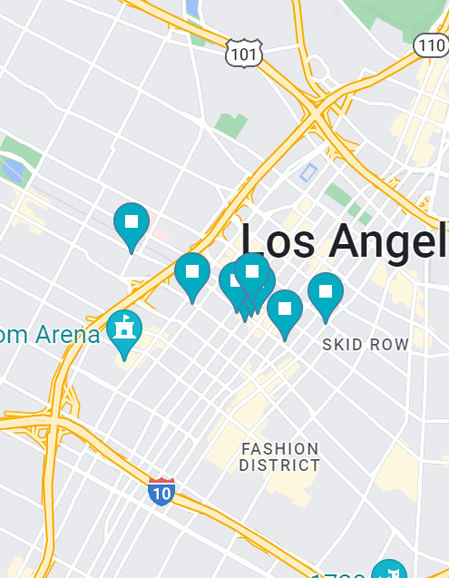

home
13/05/22
-
Running and camera from zardoz (check)
-
Order of what to implemnt.
-
Unarmed: move -> aim/target -> attack
-
armed: move -> pickup weapon -> aim/target -> shoot
-
so, the order to do things is make sure moving is good -> make sure aiming and targeting is good -> then figure out picking up weapons.
-
the attack button should work univerally and run a attack function which if unarmed defaults to a punch, but if not unarmed then run attack function on equiped weapon.
-
unarmed is a weapon as it shows in the inve3ntory as a hand, but you obviously don't need to pick it up.
20/05/22
-
Aim poses:
-
Handgun/Mini Uzi
WeaponType 1
-
Rifle/Big submachine gun
WeaponType 2
-
Melee weapon
-
Unarmed
WeaponType 0
-
Throwable
23/05/22
-
Features/Mechanics (i.e. things needed for a prototype) List:
-
Movement (currently undecided on jumping and crouching)
-
Shooting/Attacking
-
Inventory
-
change weapons
-
Talk to NPC's
-
Main NPC's have dialogue trees, extra NPC's do the RDR2 thing
-
Enemy AI
-
health
-
Pickup Items
Inventory
is the inventory a scriptable object?
If it is, then Player has a Script called Inventory that takes a SO of an inventory
if done like this then NPC's will be able to have an inventory
So PlayerInventory has a list of gameObjects?
first we need to make sure player has weapon -> hits attack button -> weapon attacks
so, you want a class of weapon, which has the function attack, but each attack is different, so base class is abstract,
and each derived class (e.g. M16), has a SO called M16 in which we write the shooting script.
so each weapon needs a name, an object and an attack
need to figure out inventory wraparound (done);
24/05/22
Pickup + add to inventory
28/08/22
Pinned notable locations from the scene on a map of LA. This is to aid in the level design.

Found area within a 3D model of downtown LA, and placed in scene. This is also to aid in level design, while trying to stay close to the source material.
-
Need to change the way the material is changed on the Adverts.
-
current system requires creating a new changeMaterial object and assigning the textures (e.g. OBEY/Pepsi)
-
this will end up in too many unique objects
-
We need to create a prefab that takes two textures and a script that will assign the textures to a parent object.
-
this can probably just be dont by editing the "Change Material" script to take two materials instead of the scriptable object.